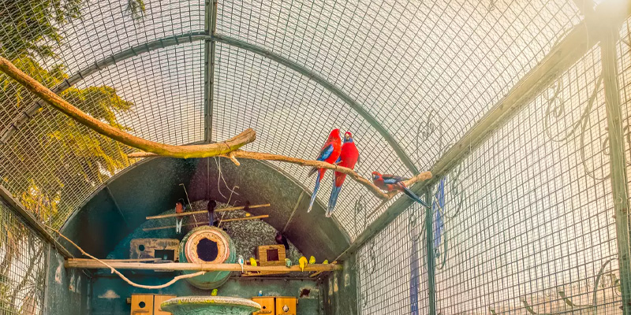
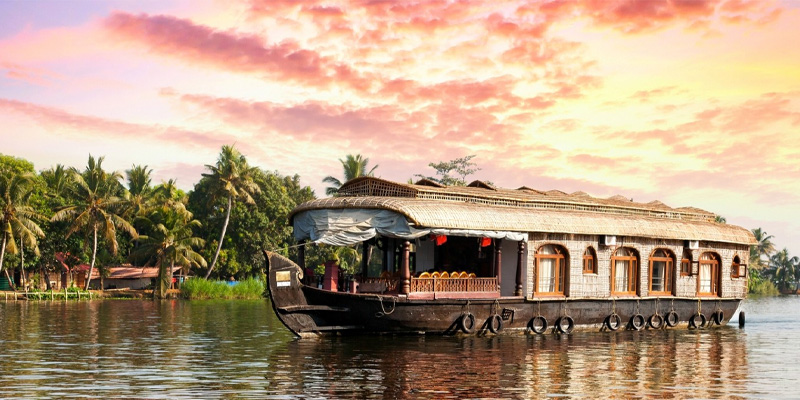
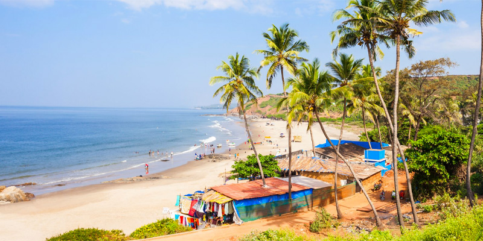
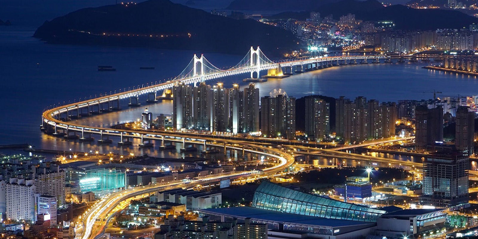
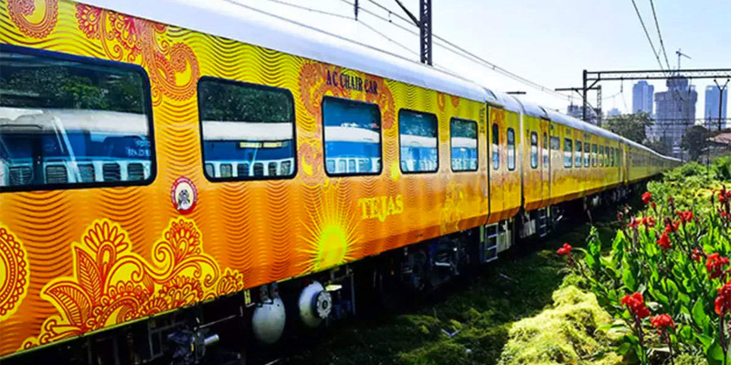

126 Weekly flights to ten key Indian citiesLufthansa and Vistara, one of India’s leading airlines start today offering its customers codeshare flights. A new partnership that adds 126 weekly flights to ten key Indian cities. This will be in addition to Lufthansa’s current schedule of 56 weekly international flights to and from the major Indian hubs of Delhi, Mumbai, Bangalore and Chennai with ultra-modern aircraft like the Airbus A350. |

India’s tallest and biggest aviary opens in MumbaiMumbai is now home to country’s tallest and biggest aviary. Maharashtra Chief Minister Uddhav Thackeray inaugurated the aviary, as part of the Republic Day on Jan 26, 2020. This is the country's first ‘walk-through’ aviary that has been built at the Veermata Jijabai Bhosale Udyan and Zoo at Byculla in Mumbai. This new attraction is spread across an area of 18200 sq ft and is 44 ft tall, which means that the aviary is as high as a five-storeyed building. Latest reports suggest that the aviary will house more than 100 species of exotic, rare, and common birds, living in their natural environs. |

Kerala Tourism earns a special mention by UNWTO for its Barrier-Free Tourism ProjectLast year, Kerala announced that it will make the entire state, especially the tourist destinations, disabled-friendly by 2021. And now, its Barrier-Free Tourism Project has won global mention with the United Nations World Tourism Organisation (UNWTO) that has hailed it as an ‘Emerging Global Destination’ in the Accessible Destination Awards 2019. The award is given by the World Tourism Organization and ONCE Foundation that works for people with disabilities. Kerala introduced the Barrier-Free Tourism Project in March last year to make at least 120 destinations in the state disabled-friendly. Thrissur, also known as the cultural capital of Kerala, is one of the first few destinations that now has all the necessary infrastructure in major tourist destinations.The facilities that are now available in the major tourist spots, include audio and sign aids, lactation rooms, ramps, Braille pamphlets, touch-screen kiosks, wheelchairs, signages, and walking aids. |

Goa’s second international airport gets green light; should be completed in three yearsAn all new international airport in Goa is on the cards, as aviation consultancy firm CAPA confirms that a second airport is going to be built in Mopa in the next three years. According to reports, permission for the the international airport just got granted by the Supreme Court, and it will be constructed by the GMR Group. Mopa is located in north Goa. |

Mumbai to reach ‘Maximum’ potential; restaurants and mall to remain open 24X7Mumbai is all set to become a City that Never Sleeps in the real sense. This means feeling hungry at odd hours will never put you into trouble if you are in the city from now on. As per the latest news reports, the Maharashtra Government has formally approved the proposal of allowing eateries and shops to remain open 24X7. Reportedly, multiplexes, restaurants, malls, and shops will now be able to stay open round-the-clock from January 27; however, they will not be allowed to serve alcohol. |

Mumbai-Ahmedabad Tejas Express – Superfast travels in IndiaThe new Tejas Express will run six days a week, except on Thursdays. Train No. 82902 Ahmedabad-Mumbai Central Tejas Express will leave Ahmedabad at 6:40 AM and reach Mumbai Central at 1:10 PM. The return trip of Train No. 82901 Mumbai Central-Ahmedabad Tejas Express will start from Mumbai Central at 3:40 PM and will arrive at Ahmedabad at 9:55 PM, except on Thursdays. |